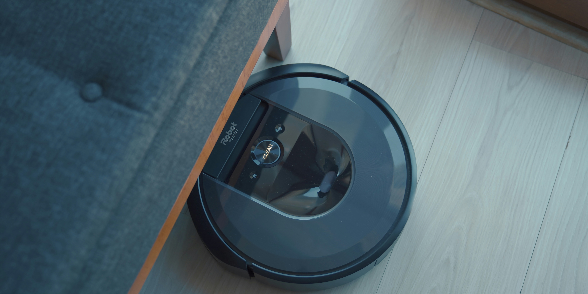

Revolución en la limpieza: Los robots aspiradores que debes conocer
Publicado el: 19 de agosto de 2024
Categoría: Tecnología
La creciente demanda por soluciones eficientes y automatizadas para la limpieza del hogar ha impulsado el desarrollo de los robots aspiradores. Estos dispositivos inteligentes han evolucionado significativamente en los últimos años, ofreciendo características cada vez más sofisticadas y adaptándose a las necesidades de un público cada vez más exigente.
En este análisis comparativo, profundizaremos en las características y prestaciones de los modelos más destacados del mercado, con el objetivo de proporcionar al lector una guía completa y objetiva para seleccionar el robot aspirador que mejor se adapte a sus requerimientos particulares.
Gama Alta
Explora los robots aspiradores de gama alta, diseñados para ofrecer lo mejor en limpieza automática, con tecnología de vanguardia y funciones avanzadas.
iRobot Roomba s9+
Público objetivo: Personas con alergias,
propietarios de mascotas, personas que buscan una limpieza
automatizada y de alta calidad.
Lo mejor: Limpieza profunda y eficiente,
Automatización total, Personalización.
Características destacadas:
Potencia de succión excepcional: Equipado con un sistema de succión aerodinámico de 40x más potente que los modelos anteriores, el Roomba s9+ es capaz de extraer la suciedad más incrustada en alfombras y moquetas, incluso en las zonas más difíciles de alcanzar.
Navegación PrecisionPath: Gracias a su avanzado sistema de navegación láser, el Roomba s9+ crea mapas detallados de tu hogar y planifica rutas de limpieza eficientes, asegurando que cada rincón esté limpio.
Cepillos de goma duales: Los cepillos de goma duales multisuperficie se adaptan a diferentes tipos de suelo, desde alfombras de pelo largo hasta suelos duros, capturando la suciedad y los pelos de mascotas con gran eficacia.
Base de autovaciado Clean Base: Esta base revolucionaria vacía automáticamente el depósito del robot hasta 30 veces, lo que significa que podrás olvidarte de vaciarlo durante semanas.
Personalización a través de la app: La aplicación iRobot HOME te permite personalizar la limpieza, programar horarios, crear zonas restringidas y controlar el robot desde cualquier lugar.
Compatibilidad con asistentes de voz: Controla tu Roomba s9+ con comandos de voz a través de Amazon Alexa o el Asistente de Google.
Pros:
- Limpieza profunda y eficiente
- Automatización total
- Personalización avanzada a través de la app
- Diseño elegante y compacto
Contras:
- Precio elevado
- Tamaño ligeramente más grande que otros modelos
Roborock S7 MaxV Ultra
Público objetivo: Personas que buscan una
solución de limpieza completa, hogares con mascotas, personas
que valoran la tecnología y la innovación.
Lo mejor: Limpieza profunda y versátil,
Automatización completa, Navegación inteligente, Personalización
avanzada.
Características destacadas:
Potencia de succión HyperForce: Con una potencia de succión de hasta 5100 Pa, el S7 MaxV Ultra es capaz de eliminar incluso la suciedad más incrustada en alfombras y moquetas.
Sistema de fregado VibraRise: La mopa vibra a alta frecuencia para eliminar las manchas más difíciles de los suelos duros. Además, el sistema VibraRise levanta automáticamente la mopa cuando el robot detecta una alfombra, evitando que se mojen.
Navegación ReactiveAI 2.0: Gracias a su sistema de navegación basado en visión artificial y láser LiDAR, el S7 MaxV Ultra es capaz de reconocer y evitar obstáculos con gran precisión, incluso objetos pequeños como cables o juguetes.
Base de carga RockDock Ultra: Esta base no solo carga el robot, sino que también vacía automáticamente el depósito de polvo, limpia la mopa y rellena el tanque de agua, ofreciendo una experiencia de limpieza completamente automatizada.
Mapeo 3D: Crea mapas precisos en 3D de tu hogar, permitiéndote personalizar la limpieza y establecer zonas prohibidas.
Control por voz: Compatible con asistentes de voz como Google Assistant y Amazon Alexa.
Pros:
- Limpieza profunda y versátil
- Automatización completa
- Navegación inteligente y precisa
- Personalización avanzada a través del mapeo 3D
Contras:
- Precio elevado
- Tamaño de la base de carga grande
Ecovacs Deebot T9 AIVI
Público objetivo: Hogares con mascotas,
personas que buscan una limpieza completa y automatizada,
usuarios que valoran la tecnología y la innovación.
Lo mejor: Evita obstáculos con precisión,
Limpieza completa en un solo paso, Mapas precisos, Control por
voz.
Características destacadas:
Inteligencia Artificial (AI): El sistema AIVI utiliza una cámara HD y algoritmos de aprendizaje automático para identificar y evitar obstáculos en tiempo real, como cables, juguetes o incluso las patas de tus mascotas.
Sistema de navegación DToF: El sistema de navegación DToF (Direct Time of Flight) permite al robot crear mapas precisos de tu hogar y planificar rutas de limpieza eficientes, incluso en entornos oscuros.
Potencia de succión: Con una potencia de succión de 3000Pa, el T9 AIVI es capaz de eliminar la suciedad más incrustada en alfombras y suelos duros.
Sistema de fregado OZMO Pro 2.0: Combina el barrido, aspirado y fregado en un solo paso, gracias a su potente sistema de fregado vibratorio.
Control por voz: Compatible con asistentes de voz como Amazon Alexa y Google Assistant.
Aplicación móvil: Permite controlar el robot, programar limpiezas y personalizar las preferencias a través de tu smartphone.
Pros:
- Evita obstáculos con precisión
- Limpieza completa en un solo paso
- Mapas precisos para una limpieza personalizada
- Control por voz
Contras:
- Precio medio-alto
- Requiere una conexión a internet
Gama Media
Los robots aspiradores de gama media son la opción perfecta para quienes buscan un equipo versátil y adaptable. Con potentes sistemas de navegación y una amplia gama de accesorios, estos modelos te permitirán personalizar la limpieza de tu hogar y adaptarla a tus necesidades específicas.
Xiaomi Roborock S6 MaxV
Público objetivo: Personas que buscan un robot
aspirador inteligente y eficiente, hogares con mascotas,
usuarios con un presupuesto medio.
Lo mejor: Evita obstáculos con precisión, Mapas
detallados, Buena relación calidad-precio.
Características destacadas:
Sistema de navegación ReactiveAI: Gracias a su doble cámara y láser LiDAR, el S6 MaxV es capaz de reconocer objetos con precisión y evitar obstáculos como cables, zapatos o incluso excrementos de mascotas.
Potencia de succión: Con una potencia de succión de 2500Pa, el S6 MaxV es capaz de eliminar la suciedad más incrustada en alfombras y suelos duros.
Mapeo preciso: Crea mapas detallados de tu hogar y permite personalizar la limpieza por habitaciones.
Control por voz: Compatible con asistentes de voz como Google Assistant y Amazon Alexa.
Aplicación móvil: Permite controlar el robot, programar limpiezas y personalizar las preferencias a través de tu smartphone.
Pros:
- Evita obstáculos con precisión
- Mapas detallados para limpieza personalizada
- Buena relación calidad-precio
Contras:
- No friega, solo aspira
- La base de carga no es automática
Cecotec Conga 990 Vital
Público objetivo: Usuarios que buscan una
solución versátil y económica para la limpieza del hogar,
personas que desean combinar aspiración y fregado.
Lo mejor: Versatilidad en funciones, Buena
relación calidad-precio, Facilidad de uso.
Características destacadas:
Tecnología iTech 3.0: Permite una navegación eficiente y aleatoria, cubriendo toda la superficie de forma eficaz.
Aspiración y fregado: Cuenta con un potente sistema de succión y un depósito de agua para fregar los suelos, aunque esta última función puede ser mejorable.
Modos de limpieza: Ofrece varios modos de limpieza para adaptarse a diferentes tipos de suelos y niveles de suciedad.
Programable: Puedes programarlo para que se ponga en marcha a la hora que más te convenga, incluso cuando no estés en casa.
Batería de larga duración: Permite limpiar grandes superficies sin necesidad de recargar con frecuencia.
Mando a distancia: Para un control más preciso y fácil de usar.
Pros:
- Versatilidad: Combina la aspiración y el fregado en un solo dispositivo
- Relación calidad-precio: Buen rendimiento a un precio asequible
- Facilidad de uso: Interfaz intuitiva y mando a distancia
- Potencia de succión: Aspira eficazmente la suciedad y el polvo
- Programable: Permite programar la limpieza
- Varios modos de limpieza: Adaptable a distintos tipos de suelos y niveles de suciedad
Contras:
- Navegación: Utiliza un sistema aleatorio que puede ser menos eficiente
- Fregado: Rendimiento limitado en comparación con modelos más especializados
- Ruido: Puede ser algo ruidoso durante la limpieza
- Batería: Duración aceptable pero insuficiente para grandes superficies
- Capacidad del depósito: Depósito de polvo puede requerir vaciado frecuente
iRobot Roomba i7+
Público objetivo: Personas que buscan un robot
aspirador de alta gama con características avanzadas, hogares
que requieren limpieza eficiente y personalizada, usuarios que
valoran la comodidad y la automatización.
Lo mejor: Automatización total, Mapas
personalizados, Alta eficiencia, Facilidad de uso, Durabilidad.
Características destacadas:
Imprint Smart Mapping: Crea mapas detallados de tu hogar y permite personalizar la limpieza por habitaciones.
Estación de vaciado automático Clean Base: Vacía automáticamente el depósito del robot hasta 30 veces, reduciendo al mínimo tu intervención.
Potencia de succión: Ofrece una potente succión para eliminar la suciedad incrustada en alfombras y suelos duros.
Navegación precisa: Utiliza sensores avanzados para navegar de forma eficiente por tu hogar y evitar obstáculos.
Control por voz: Compatible con asistentes de voz como Google Assistant y Amazon Alexa.
Aplicación móvil iRobot HOME: Permite controlar el robot, programar limpiezas y personalizar las preferencias a través de tu smartphone.
Pros:
- Automatización total: La estación de vaciado automático elimina la necesidad de vaciar el depósito con frecuencia.
- Mapas personalizados: Permite limpiar habitaciones específicas o crear zonas restringidas.
- Alta eficiencia: La combinación de mapeo preciso y potente succión garantiza una limpieza profunda.
- Facilidad de uso: La aplicación móvil y la compatibilidad con asistentes de voz facilitan el control del robot.
- Durabilidad: iRobot es una marca reconocida por la calidad y durabilidad de sus productos.
Contras:
- Precio: Es un producto de gama alta, por lo que su precio puede ser elevado para algunos usuarios.
- No friega: Al igual que muchos otros robots aspiradores, el Roomba i7+ no tiene función de fregado.
- Requiere una base de carga dedicada: La estación de vaciado automático ocupa un espacio adicional.
Gama Baja
¿Buscas un robot aspirador que te ayude a mantener tu hogar limpio sin comprometer tu presupuesto? Los modelos de gama baja ofrecen una solución práctica y eficiente para realizar las tareas de limpieza más básicas. Aunque no cuentan con todas las funciones de los modelos más avanzados, estos robots son capaces de aspirar eficazmente la suciedad y el polvo de tus suelos. Descubre en esta sección los mejores modelos del mercado y elige el que mejor se adapte a tus necesidades.
Xiaomi Mi Robot Vacuum-Mop P
Público objetivo: Personas que buscan un robot
aspirador y fregasuelos versátil, hogares de tamaño medio,
usuarios con un presupuesto ajustado.
Lo mejor: Versatilidad en aspiración y fregado,
Mapas precisos, Buena relación calidad-precio, Facilidad de uso.
Características destacadas:
Sistema de navegación láser LDS: Crea mapas precisos de tu hogar y planifica rutas de limpieza eficientes, evitando obstáculos y zonas restringidas.
Potencia de succión: Con una succión de 2100 Pa, es capaz de eliminar una gran variedad de suciedad, desde polvo hasta partículas más grandes.
Sistema de fregado inteligente: El depósito de agua con control preciso permite ajustar el nivel de humedad y simular el fregado manual.
Mapas personalizables: Crea mapas detallados de tu hogar y define zonas de limpieza, restringidas y establece horarios de limpieza.
Control por voz: Compatible con asistentes de voz como Google Assistant y Amazon Alexa.
Aplicación móvil: Permite controlar el robot, programar limpiezas y personalizar las preferencias a través de tu smartphone.
Pros:
- Versatilidad: Aspira y friega en un solo paso.
- Mapas precisos: Permite una limpieza personalizada y eficiente.
- Buena relación calidad-precio: Ofrece un excelente rendimiento a un precio competitivo.
- Fácil de usar: La aplicación móvil y el control por voz facilitan su uso.
Contras:
- Autonomía: La duración de la batería puede ser limitada en hogares muy grandes.
- No detecta obstáculos tan pequeños como otros modelos: Aunque el sistema láser es preciso, puede tener dificultades con obstáculos muy pequeños.
Cecotec Conga 3890 Ultra
Público objetivo: Personas que buscan un robot
aspirador y fregasuelos versátil, usuarios que valoran una buena
relación calidad-precio, personas que desean funciones
inteligentes.
Lo mejor: Versatilidad en múltiples tareas,
buena relación calidad-precio, navegación eficiente, control por
voz y app.
Características destacadas:
4 en 1: Barre, aspira, pasa la mopa y friega en un solo dispositivo, lo que ofrece una solución integral para la limpieza del hogar.
Potencia de succión: Con 2300 Pa de potencia, es capaz de eliminar la mayoría de la suciedad en diferentes tipos de superficies.
Navegación láser: Utiliza un sistema de navegación láser para mapear tu hogar y planificar rutas de limpieza eficientes, asegurando una cobertura completa.
Sistema de fregado: Incluye un depósito mixto para sólidos y líquidos, permitiendo limpiar y fregar simultáneamente para una limpieza más completa.
Control por voz: Compatible con asistentes de voz como Alexa y Google Assistant, lo que facilita la interacción y el control del robot.
Aplicación móvil: Ofrece control remoto y programación de limpieza a través de tu smartphone, para mayor comodidad y personalización.
Pros:
- Versatilidad: Realiza múltiples tareas de limpieza en un solo dispositivo.
- Buena relación calidad-precio: Ofrece características interesantes a un precio competitivo.
- Navegación eficiente: Gracias al sistema láser.
- Control por voz y app: Facilita el uso y la programación del robot.
Contras:
- Puede no ser tan potente como modelos de gama alta.
- La calidad de fregado podría ser mejorable en comparación con otros modelos especializados.
Nuestro ranking: Los mejores robots del 2024 según ReviZoom
Conclusión
Elegir el robot aspirador adecuado va más allá de simplemente seleccionar un electrodoméstico; se trata de invertir en comodidad y eficiencia para tu hogar. En el mercado actual, cada modelo ofrece características únicas diseñadas para satisfacer diferentes necesidades y estilos de vida. Al decidirte por un robot aspirador, estás buscando un aliado tecnológico que se adapte a tus necesidades específicas, te ayude a optimizar tu tiempo y te permita disfrutar de un hogar más limpio y organizado con el menor esfuerzo posible.
Desde la potencia de succión y el sistema de navegación hasta las funciones adicionales como el fregado y el autovaciado, cada aspecto del robot aspirador contribuye a su capacidad para facilitar la limpieza diaria. Evaluar estos detalles en función de tus necesidades particulares—ya sea la cantidad de suciedad, el tipo de suelos o las funciones inteligentes—es esencial para tomar una decisión informada.
En última instancia, un robot aspirador no es solo un aparato
electrónico; es una inversión en tu bienestar y tranquilidad. Al
elegir el modelo adecuado, te aseguras de contar con un compañero de
limpieza que no solo mejora la eficiencia en tu hogar, sino que
también te proporciona la comodidad de dedicar más tiempo a lo que
realmente importa.
En definitiva, un robot aspirador es mucho más que un aparato
electrónico: es una inversión en bienestar y tranquilidad.
Comparativa de Robots Aspiradores
| Imagen | Modelo | Marca | Precio estimado | Potencia de succión (Pa) | Autonomía (min) | Navegación | Funciones adicionales | Ideal para |
|---|---|---|---|---|---|---|---|---|

|
Roomba s9+ | iRobot | 1.300€ aprox | 4000 | 120 | Láser | Base de autovaciado, mapeo, control por voz | Pisos duros, alfombras, mascotas, alergias |

|
Roborock S7 MaxV Ultra | Roborock | 900€ aprox | 5100 | 180 | Láser | Base de autovaciado, mopa vibratoria, reconocimiento de objetos, mapeo 3D | Pisos duros, alfombras, mascotas, hogares grandes |

|
Ecovacs Deebot T9 AIVI | Ecovacs | 680€ aprox | 3000 | 180 | Láser, cámara | Reconocimiento de objetos, mapeo, control por voz | Pisos duros, alfombras, mascotas |

|
Xiaomi Roborock S6 MaxV | Xiaomi | 450€ aprox | 2500 | 150 | Láser, cámara | Mapeo, control por voz, reconocimiento de objetos | Pisos duros, alfombras, hogares de tamaño medio |

|
Cecotec Conga 990 Vital | Cecotec | 100€ aprox | 2700 | 160 | Láser | Mopa, mapeo, programación | Pisos duros, alfombras, hogares de tamaño medio |

|
iRobot Roomba i7+ | iRobot | 1150€ aprox | 3400 | 75 | Láser | Base de autovaciado, mapeo, control por voz | Pisos duros, alfombras |

|
Xiaomi Mi Robot Vacuum-Mop P | Xiaomi | 150€ aprox | 2000 | 110 | Láser | Mopa, mapeo, control por voz | Pisos duros, alfombras |

|
Cecotec Conga 3890 Ultra | Cecotec | 250€ aprox | 2700 | 160 | Láser | Mopa, mapeo, programación, múltiples mapas | Pisos duros, alfombras |